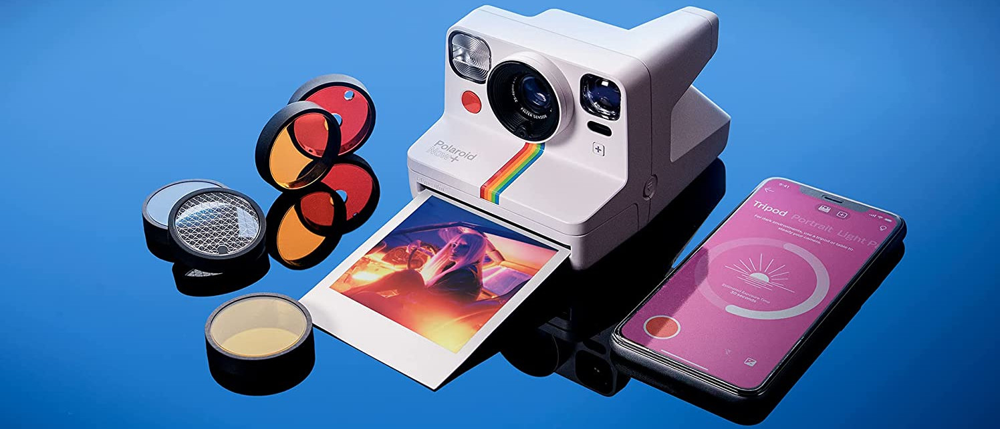

Blog
Câmeras instantâneas: O que são? Qual a Melhor?
12 de setembro de 2024
Uma câmera de fotografia instantânea captura imagens e faz a revelação em papel fotográfico
com muita rapidez:
alguns instantes ou minutos depois da captura.
Ela pode ser analógica ou digital.
Existem basicamente dois tipos principais de câmeras instantâneas:
Câmeras analógicas:
Funcionam de forma clássica, usando filme fotográfico especial para revelar a imagem imediatamente após o clique. Essas câmeras têm o apelo vintage, remetendo às décadas passadas.
Câmeras híbridas (digitais e instantâneas):
Oferecem o melhor dos dois mundos. Elas capturam a imagem digitalmente, permitindo ajustes antes da impressão. Algumas até armazenam as fotos em cartões de memória.
As câmeras instantâneas trazem uma série de vantagens.
A principal delas é a possibilidade de imprimir fotos imediatamente após o clique,
proporcionando uma experiência tangível e imediata. Além disso,
elas oferecem uma conexão emocional com a imagem, já que você pode segurar a foto física logo após tirá-la.
O estilo retrô e nostálgico das fotos, com suas bordas clássicas, é outro ponto atrativo,
especialmente para aqueles que apreciam a estética vintage.
Por fim, sua simplicidade as torna acessíveis a todos, independentemente do nível de experiência com fotografia,
sendo perfeitas para capturar momentos espontâneos em eventos e encontros.
Minha preferida: Polaroid

Quando falamos em câmeras instantâneas, é impossível não pensar na Polaroid,
uma das marcas mais icônicas nesse segmento.
A Polaroid lançou modelos clássicos que fizeram história e, hoje,
continua inovando com câmeras que mesclam o estilo vintage com a tecnologia moderna.
A Polaroid Now, por exemplo, oferece recursos como foco automático,
design elegante e a possibilidade de capturar aquelas fotos com o charme analógico,
mas com uma facilidade de uso incrível.